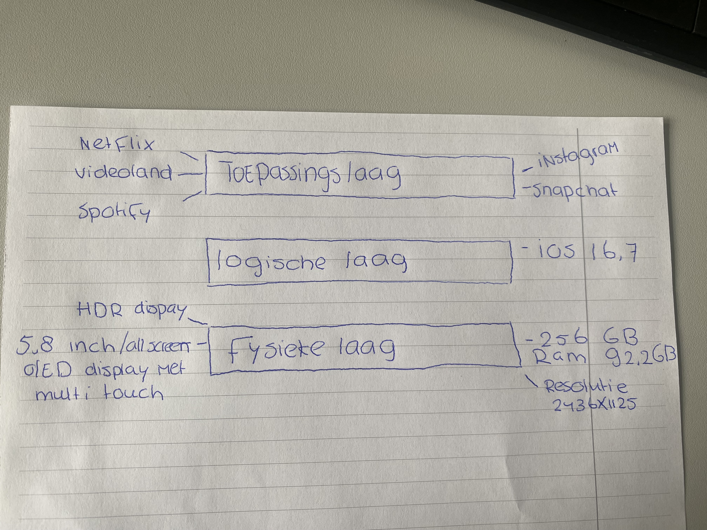

beweeg de muis over de button om het dropdown menu te openen
De toepassingslaag, ook wel de applicatielaag genoemd, is het bovenste laag van de software en omvat softwaretoepassingen die specifieke taken uitvoeren voor gebruikers zoals apps en games. taken van de toepassingslaag zijn
1.gebruikersinterfaces
2.ondersteunt applicatieprotocollen
3.zorgt voor gegevensconversie en codering
4.beheert gegevensopslag
5.implementeert beveiligingsmaatregelen
De term "logische laag" in de informatica verwijst naar een abstract niveau van gegevensverwerking en communicatie binnen een computersysteem of netwerk. De logische laag bevindt zich boven de fysieke laag, die zich bezighoudt met de elektrische en hardwarematige aspecten van gegevensoverdracht, en onder de toepassingslaag, die specifieke softwaretoepassingen en -diensten omvat.
de fysieke laag de fysieke laag in het OSI-model verantwoordelijk voor de fysieke kanten van gegevensoverdracht en speelt het een cruciale rol bij het mogelijk maken van communicatie tussen apparaten in een computernetwerk. Het zorgt ervoor dat gegevens op een betrouwbare manier van de ene locatie naar de andere kunnen worden getransporteerd via verschillende fysieke media. In de fysieke laag staat bijvoorbeeld het geheugen, ram en resolutie van je telefoon.
